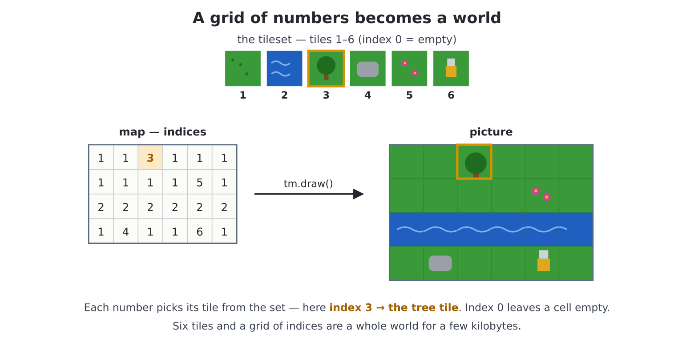
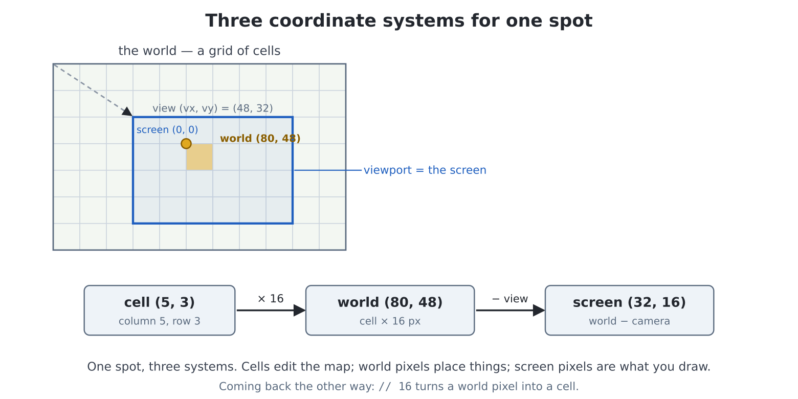

Every large game world you have ever wandered — dungeon, kingdom, galaxy — was almost certainly a tile map: a small set of square pictures, reused thousands of times according to a grid of numbers. The economy is glorious: six 16×16 tiles plus a 64×48 grid of indices is a 1024×768-pixel world for about three kilobytes. Chapter 10’s “turtle by data” challenge told you the drawing should live in the data; here that idea gets a C-speed engine, a camera, and collision. This is the last piece of world-building machinery before Part IV.
Two ingredients, then:

Per house rules, we owe no one any artwork. This program draws six
tiles — grass, water, tree, rock, flower, and our explorer — and banks
them as a file, chapter 16’s pipeline exactly.
edit("maketiles.py"):
d = hdmi.fb()
d.fill(d.colour(BLACK))
GRASS = d.colour(0x1E7A1E)
DARK = d.colour(0x156015)
# tile 1: grass (x 0-15), speckled
d.fill_rect(0, 0, 16, 16, GRASS)
for i in range(6):
d.pixel(2 + i * 2, (i * 5) % 16, DARK)
# tile 2: water
d.fill_rect(16, 0, 16, 16, d.colour(0x1040A0))
d.hline(18, 5, 10, d.colour(0x3070D0))
d.hline(20, 11, 10, d.colour(0x3070D0))
# tile 3: tree (on grass)
d.fill_rect(32, 0, 16, 16, GRASS)
d.fill_rect(39, 10, 3, 5, d.colour(BROWN))
d.ellipse(40, 6, 6, 6, d.colour(MYRTLE), True)
# tile 4: rock (on grass)
d.fill_rect(48, 0, 16, 16, GRASS)
d.rbox(50, 4, 12, 10, 3, d.colour(GRAY), d.colour(GRAY))
# tile 5: flowers (on grass)
d.fill_rect(64, 0, 16, 16, GRASS)
for fx, fy in ((68, 4), (74, 9), (69, 12)):
d.pixel(fx, fy - 1, d.colour(MAGENTA))
d.pixel(fx - 1, fy, d.colour(MAGENTA))
d.pixel(fx + 1, fy, d.colour(MAGENTA))
d.pixel(fx, fy + 1, d.colour(MAGENTA))
d.pixel(fx, fy, d.colour(YELLOW))
# tile 6: the explorer (on black -- black becomes the cut-out)
d.fill_rect(84, 6, 8, 7, d.colour(GOLD)) # body
d.fill_rect(85, 1, 6, 5, d.colour(LITEGRAY)) # head
d.fill_rect(84, 13, 3, 3, d.colour(RED)) # boots
d.fill_rect(89, 13, 3, 3, d.colour(RED))
save_image("tiles.bmp")
print("tileset saved")Run it, admire the six squares, move on. (A tip for later: this file is your art studio — better trees are an edit away, and every world you build inherits them.)
edit("meadow.py"):
import time
from pcimage import load_image
# the maps below are sized for 640x480
screen(hdmi.RGB640)
time.sleep(3)
d = hdmi.fb()
sheet = load_image("tiles.bmp")
# exactly one 640x480 screen
tm = TileMap(sheet, 16, 16, cols=40, rows=30)
tm.fill(1) # grass everywhere
# a tree at column 5, row 3
tm.set(5, 3, 3)
tm.set(6, 3, 3) # and a neighbour
# flowers mid-meadow
tm.set(20, 12, 5)
# a river along row 20
for col in range(40):
tm.set(col, 20, 2)
tm.view(0, 0)
tm.draw()
time.sleep(8)TileMap(sheet, tile_w, tile_h, cols, rows) makes the
world — tm.fill() and tm.set(col, row, tile)
paint by number, tm.view() aims the camera in world
pixels, and tm.draw() renders the viewport in one
C-speed call. A 1,200-cell screen, drawn faster than a single
draw_jpg. (Note the map coordinates are
cells, the view coordinates pixels —
cell (5, 3) sits at world pixel (80, 48).
Keeping the two systems straight is half of tile-map programming;
// 16 and * 16 are the bridge.)

Maps can also arrive as data —
TileMap(..., data=rows) takes a list of row-lists (chapter
10 nesting, professionally employed), and
TileMap.load("world.csv") reads one from a comma-separated
file: a whole level, editable in pye, shareable on the SD
card, designed by someone who has never seen your code. The
machinery/data separation of chapter 10, now with landscapes.
Coming from MMBasic: this is
TILEMAP— the same 0-is-empty rule, 1-based tile numbering, attributes and collision test, with the map wrapped in an object.
Now the real thing: a world four times the screen, and a camera that
glides over it. edit("glide.py"):
import random
import time
from pcimage import load_image
screen(hdmi.RGB640)
time.sleep(3)
sheet = load_image("tiles.bmp")
tm = TileMap(sheet, 16, 16, cols=80, rows=60) # 1280x960 world
tm.fill(1)
random.seed(7)
# scatter scenery
for _ in range(120):
tm.set(random.randint(0, 79), random.randint(0, 59),
random.randint(2, 5))
# camera stays on the map
tm.clamp(hdmi.width(), hdmi.height())
hdmi.close("F")
hdmi.create()
console("none")
try:
vx = 0
# a slow southward drift
for vy in range(0, 960 - 480 + 1, 2):
vx = min(vx + 1, 1280 - 640)
tm.view(vx, vy)
hdmi.write("F")
tm.draw()
hdmi.write("N")
hdmi.vsync()
hdmi.copy("F", "N")
finally:
hdmi.write("N")
console()The frame recipe is chapter 17’s flip, with tm.draw() as
the entire scene: compose on F, flip on vsync. Two lines deserve
attention. tm.clamp(vw, vh) — told the viewport’s size once
— stops view and scroll ever showing the void
past the map’s edges. And the drift maths caps vx at
1280 - 640: world width minus screen width, the camera’s
last legal position — the clamp would catch it anyway, but knowing
why that number is the limit is the skill.
A camera is not a game; a character is. Three tools make the world solid underfoot:
tm.blit_tile(tile, sx, sy, skip)
stamps one tile at a screen position — drawn after
tm.draw(), it is the cheapest possible player graphic (our
tile 6, with black as the skip cut-out). Sprites (chapter
18) work here too; for one hero, this is lighter.tm.set_attr(tile, value) tags a tile
kind with a number — conventionally a bitmask,
SOLID = 1 — and
tm.collide(wx, wy, w, h, mask=SOLID)
answers: does this world rectangle overlap any tile tagged solid? That
one call is walls, water, and locked doors.tm.tile_at(wx, wy) names the tile
under a world pixel — “am I standing in flowers?”And the movement idiom that goes with them, worth learning as a sentence: try the move, and only keep it if the world says yes.
nx = px + dx
if not tm.collide(nx, py, 14, 14, mask=SOLID):
px = nx(That fragment is part of the project below, not a program — the one exception the house style allows itself, because you are about to paste its home.)
A generated island, a camera that follows you, trees and water that
stop you, flowers that want picking. edit("island.py"):
import random
import keyboard
import time
from pcimage import load_image
screen(hdmi.RGB640)
time.sleep(3)
def held(code):
for i in range(1, keydown(0) + 1):
if keydown(i) == code:
return True
return False
W = hdmi.width()
H = hdmi.height()
d = hdmi.fb()
GRASS, WATER, TREE, ROCK, FLOWER, HERO = 1, 2, 3, 4, 5, 6
SOLID = 1
sheet = load_image("tiles.bmp")
tm = TileMap(sheet, 16, 16, cols=64, rows=48) # 1024x768 world
# --- generate the island
# the book's island; change me
random.seed(12)
tm.fill(GRASS)
# ocean border, two deep
for col in range(64):
for row in (0, 1, 46, 47):
tm.set(col, row, WATER)
for row in range(48):
for col in (0, 1, 62, 63):
tm.set(col, row, WATER)
for _ in range(90): # forest
tm.set(random.randint(2, 61), random.randint(2, 45), TREE)
for _ in range(25): # boulders
tm.set(random.randint(2, 61), random.randint(2, 45), ROCK)
for _ in range(40): # flowers
tm.set(random.randint(2, 61), random.randint(2, 45), FLOWER)
# clear ground at the start
for col in (31, 32, 33):
for row in (23, 24, 25):
tm.set(col, row, GRASS)
tm.set_attr(WATER, SOLID)
tm.set_attr(TREE, SOLID)
tm.set_attr(ROCK, SOLID)
tm.clamp(W, H)
# start mid-island
px, py = 32 * 16, 24 * 16
picked = 0
BLACK_C = d.colour(BLACK)
hdmi.close("F")
hdmi.create()
console("none")
try:
while not held(keyboard.ESC):
# try the move; keep it if the world allows
nx, ny = px, py
if held(keyboard.LEFT):
nx -= 2
if held(keyboard.RIGHT):
nx += 2
if held(keyboard.UP):
ny -= 2
if held(keyboard.DOWN):
ny += 2
if not tm.collide(nx, py, 14, 14, mask=SOLID):
px = nx
if not tm.collide(px, ny, 14, 14, mask=SOLID):
py = ny
# standing in flowers? pick them
if tm.tile_at(px + 7, py + 7) == FLOWER:
tm.set((px + 7) // 16, (py + 7) // 16, GRASS)
picked += 1
beep(880, 15)
# camera follows, map-clamped
vx = px + 7 - W // 2
vy = py + 7 - H // 2
tm.view(vx, vy)
# compose and flip
hdmi.write("F")
tm.draw()
tm.blit_tile(HERO, px - max(0, min(vx, 1024 - W)),
py - max(0, min(vy, 768 - H)), skip=BLACK_C)
hdmi.text(f"flowers: {picked}", 8, 8, d.colour(WHITE),
BLACK_C)
hdmi.write("N")
hdmi.vsync()
hdmi.copy("F", "N")
finally:
hdmi.write("N")
console()Wander. Pick the meadows clean. Fail to walk through a tree. Then read the interesting parts back:
// 16) to edit the map; the camera subtracts view from
world to get screen. Every line is one of the three coordinate systems —
name them as you read and the program becomes transparent.tm.set mid-game
turns flowers to grass — the map is a live data structure, not a
backdrop. Doors that open, bridges that burn, crops that grow: all
tm.set.tm.view()
clamps itself, but the hero must be drawn relative to the
clamped view — hence the max(0, min(...))
mirroring it. (Stand at the island’s edge and watch yourself walk away
from the screen centre: that’s the clamp, working.)console("none"), F discipline,
everything restored in finally — the chapter 17 manners,
now habit.for loop of
WATER cells). The island is ten lines of generation; own
them.print(tm.tile_at(px + 7, py + 16)) — the tile under your
feet rather than your middle. (Where does the print go while
console("none") holds? Exactly. Route it to
"serial" instead and watch from the USB-C terminal — the
debugging rig for full-screen games.)SOLID attr,
and when tile_at says you’re in it, move 1 pixel instead of
2. Wading, in four lines.tm.clamp(...) and walk to the shore. The void
beyond the map is instructive to see once — then put the clamp
back.meadow.py, then
tm is gone with the program — so re-create it at the REPL,
tm.draw(), and
tm.set(...)/tm.draw() by hand. Cell-by-cell
world editing, interactively.pye as your level editor — and load it
with TileMap.load("world.csv"). A maze, a village, a
dungeon floor: the file is the level, and your island program
barely changes.tm.get,
fill_rect of size 1… or 2) with a blinking dot for the
hero. Cells-to-pixels, the other direction.tm.get/tm.set and the
try-the-move idiom, applied to something other than yourself. (This is
nine-tenths of a classic puzzle game; the last tenth is target squares
and a win check.)